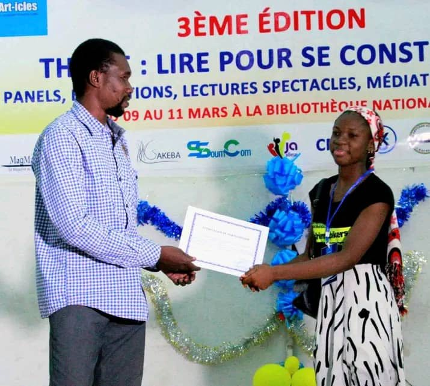
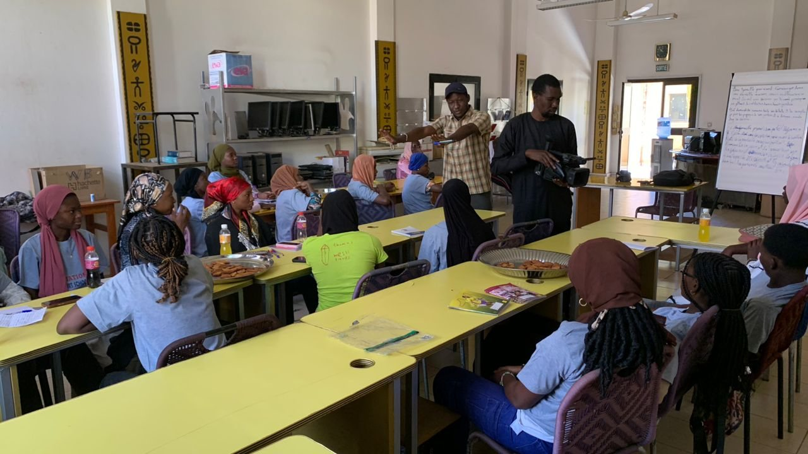
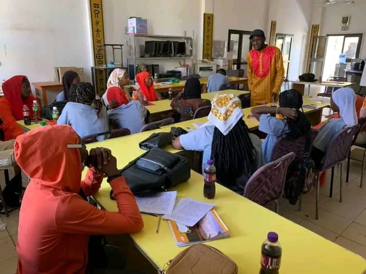
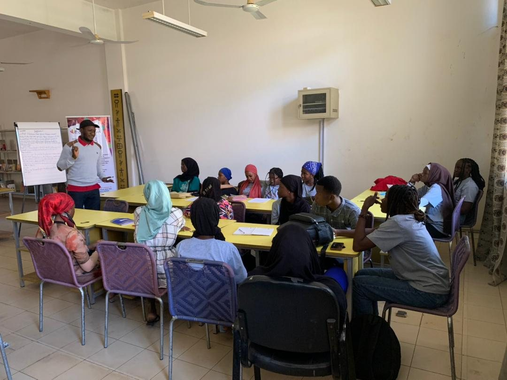
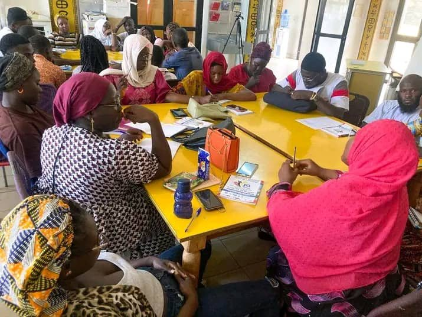
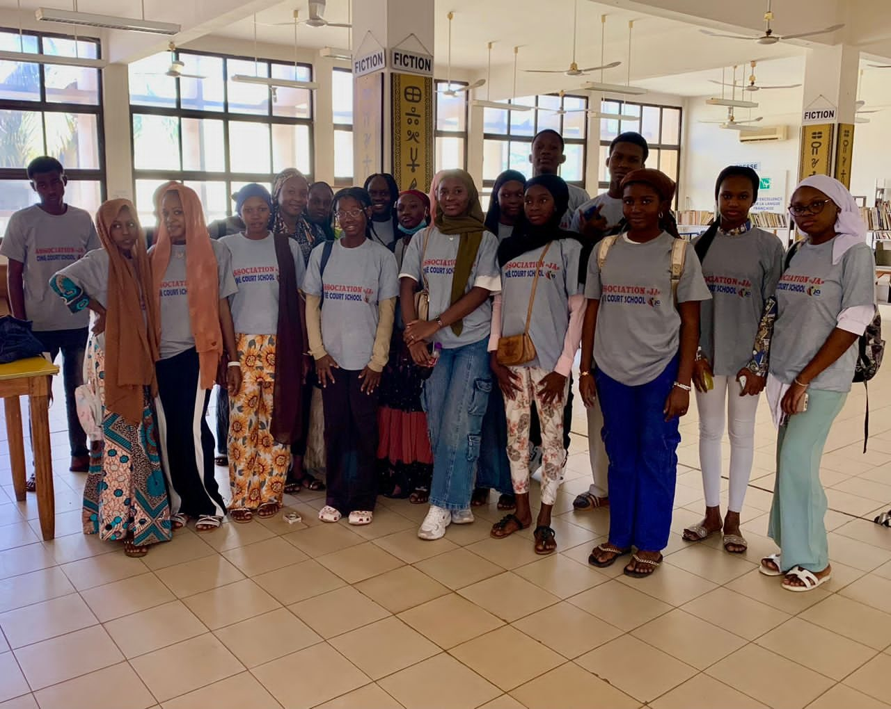

À la une
Les nouvelles de l'association : projections, ateliers, partenariats et parcours d'autodidactes.

Une nouvelle session de formation s'est conclue par une cérémonie de remise d'attestations, entre autodidactes et formateurs.
Lire la suite
JA IMAGE lance une séance récurrente dédiée aux courts-métrages africains, ouverte à tous les publics, avec un temps d'échange après chaque projection.
Lire la suite
Notre sélection de films marquants portés par une nouvelle génération de cinéastes du continent.
Lire la suite
Douze autodidactes ont terminé leur premier montage encadré en trois semaines, avec restitution publique.
Lire la suite
L'association s'associe à un festival de cinéma régional pour présenter les projets de ses autodidactes.
Lire la suite
Un aboutissement pour trois membres accompagnés depuis un an, dont les films seront projetés en ciné-club.
Lire la suite